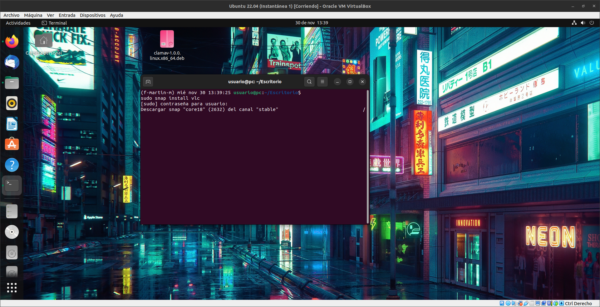
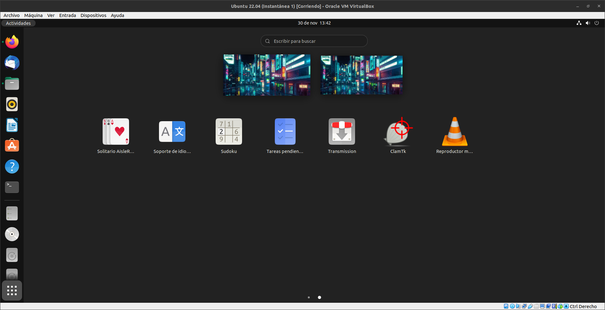
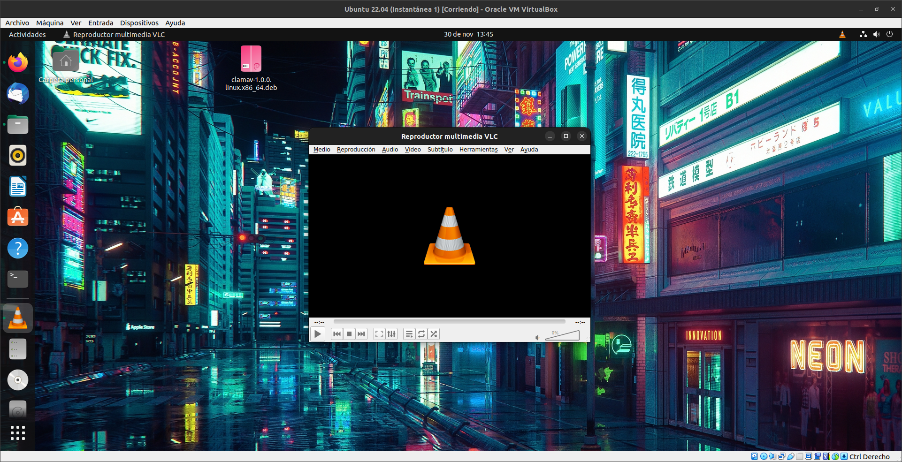

VLC
VLC es un reproductor y framework multimedia, libre y de codigo abierto desarrollado por el proyecto VideoLAN.
Es un programa multiplataforma con versiones disponibles para muchos sistemas operativos, es capaz de reproducir casi cualquier formato de video
sin necesidad de instalar codecs externos y puede reproducir videos en formatos DVD, Blueray, a resoluciones normales, en alta definicion
o incluso en ultra alta definicion o 4K.

Para descargar VLC tendremos que abrir una terminal y poner el comando sudo snap install vlc.
Esperamos a que instale.

Una vez que se haya instalado lo iniciamos.

Y esta seria la interfaz de VLC, ahora podemos abrir cualquier formato de video en nuestro equipo.
Cabe recalcar que tambien sirve para reproducir streaming.